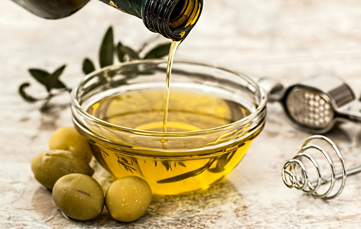
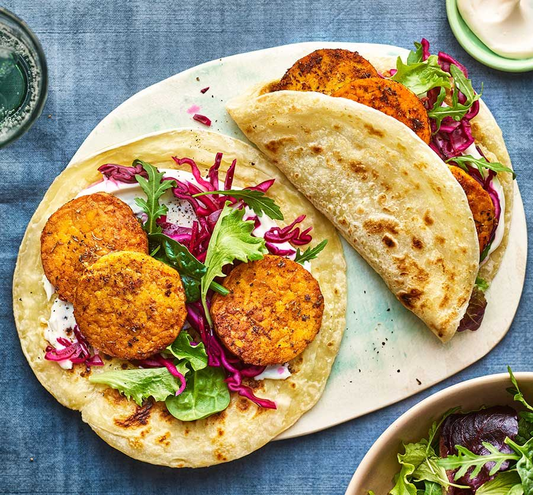

Showing 8 results for "veggie chili"

Recipe
Kiki's Veggie Chili
Bold flavors of chili powder, cumin, and smoked paprika. A house favorite since 2005.

Skill
Chop an Onion Like a Pro
Master the essential technique for perfectly uniform pieces without the tears.

Ingredient
Unlocking Olive Oil
Extra virgin, light, refined — which type is best for your cooking?

Dining Out
Navigating Vegan Menus
How restaurants are revolutionizing vegetarian & vegan dining with exciting new menus.

Recipe
Chicken Piccata
Classic Italian-American dish with capers, lemon, and butter sauce.

Recipe
Tofu Banh Mi
Vietnamese-inspired sandwich with marinated tofu and pickled vegetables.

Recipe
Betty's Butter Biscuits
Flaky, buttery Southern biscuits that pair perfectly with chili and soups.

Recipe
Obie's Texas Brisket
Low and slow smoked brisket with a bold dry rub and rich bark.